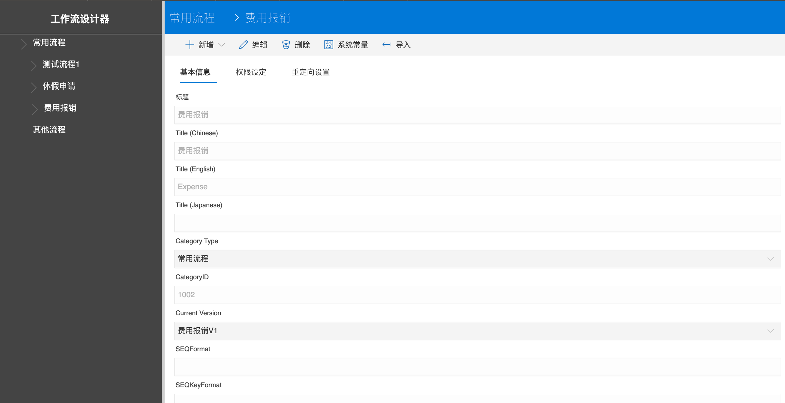
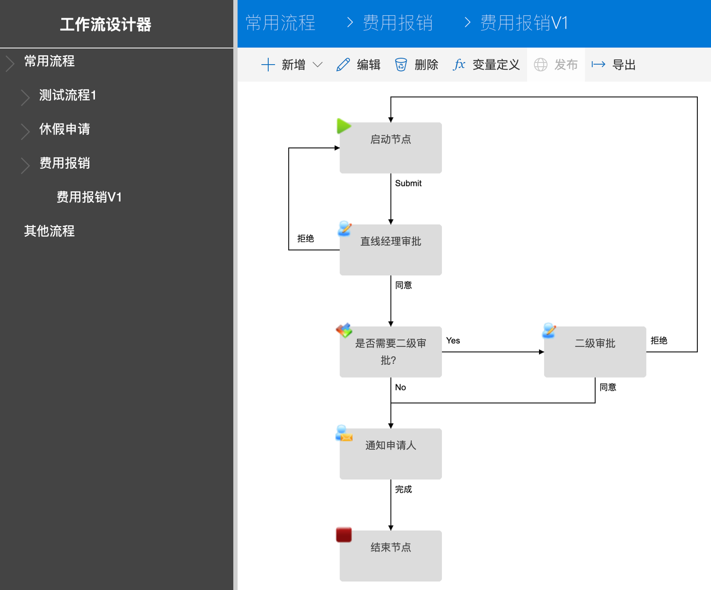
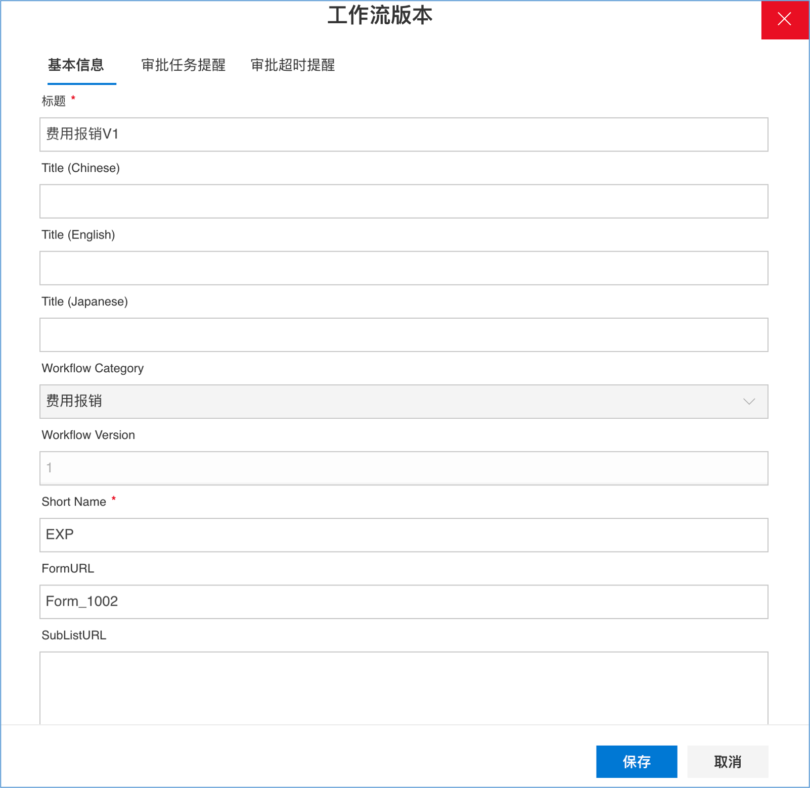
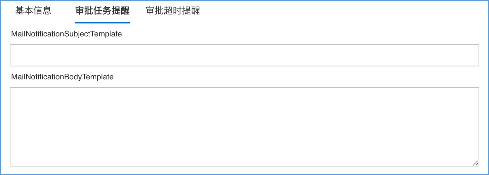
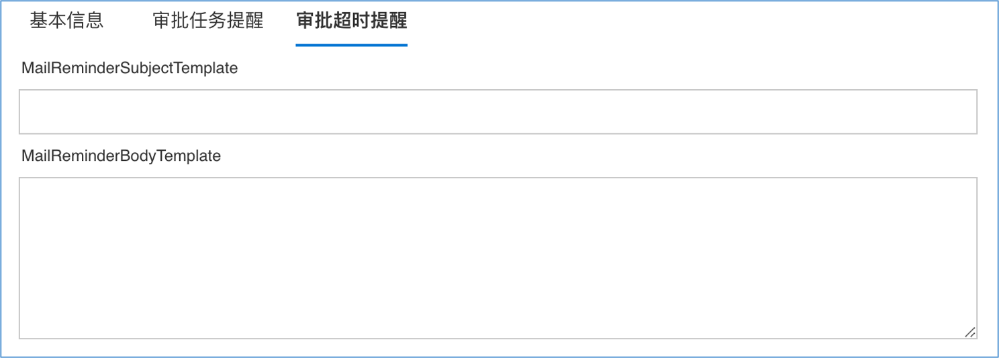
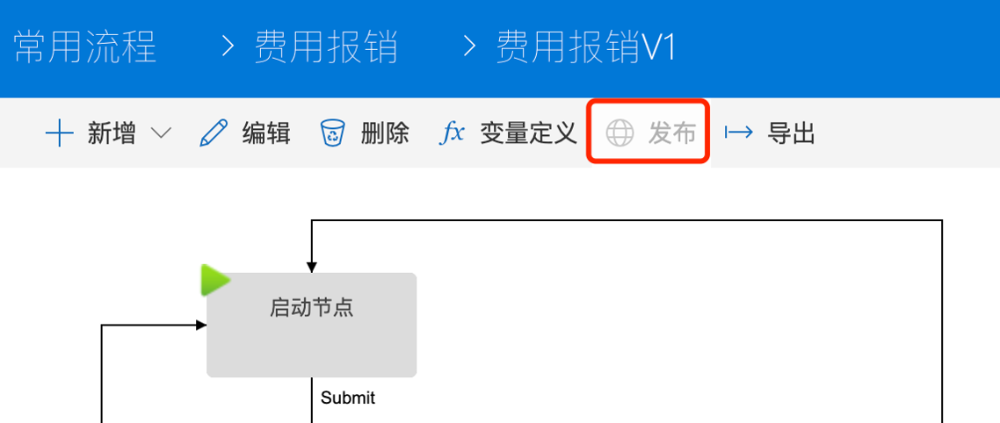

设计流程并发布
设计流程
通过下面的URL打开部署在当前站点的流程设计器：
站点URL/sitepages/workflowdesigner.aspx
工作流设置
进入流程设计器后，点击左侧导航栏：常用流程-费用报销，右侧页面中将显示费用报销流程相关信息。

基本信息
- 标题 – 费用报销
- 中文标题 – 费用报销
- 英文标题 – Expense
- 日文标题 – 空白，如果需要可编辑补充；
- 工作流类型 – 常用流程，如果需要可编辑选择；
- 工作流类型ID – 1002，如果需要可编辑，注意该ID在当前站点的所有工作流中需保持唯一；
- 当前版本 – 费用报销V1；
- SEQFormat，SEQKeyFormat – 工作流编号生成规则，均为空白，默认生成规则为『流程缩写-6位数年月-6位流水号』，例如：EXP-202006-000001，其中的流水号以年月为单位进行重置；
- 备注
权限设定
- 可编辑公司 – 如果选择可编辑公司，则代表全公司用户均可以在系统中发起这个流程；
- 可编辑部门 – 属于被选择部门的用户可以发起这个流程；
- 可编辑角色 – 属于被选择角色的用户可以发起这个流程；
- 可查看角色 – 属于被选择角色的用户可以查看到和自己相关（发起、审批、审阅或被分享）的所有流程单据；
- 部门查看角色 – 属于被选择角色的用户可以查看到属于自己部门的所有流程单据；
- 部门和子部门查看角色 – 属于被选择角色的用户可以查看到属于自己部门以及所有下属子部门的所有流程单据；
- 公司查看角色 – 属于被选择角色的用户可以看到全公司所有流程单据。
重定向设置
- 链接类型 – 工作流列表；
- 链接属性 – 设置工作流列表显示视图为SSFormView_1002，在工作流列表中可进行搜索的字段：
{"DisplayView":"SSFormView_1002","SearchFields":"SSW_WorkflowNumber,SSW_Applicant_Text,SSW_CurrentStatus_Text,Title"}
工作流版本
流程信息查看/编辑完成后，点击左侧导航栏：常用流程-费用报销-费用报销V1，在右侧内容区域将显示当前选择的流程图形，如下图：

点击页面上方的编辑按钮，在弹出窗口中显示工作流版本信息：
基本信息

- 标题
- 中文标题
- 英文标题
- 日文标题
- 工作流类型 – 费用报销
- 工作流版本 – 1，工作流版本号码每次发布新版本时自动升级；
- 流程缩写 – EXP，流程缩写用于生成单据编号时作为前缀使用，例如：EXP-202006-000001；
- FormURL – Form_1002，此处填写表单设计器中设计的表单的表单ID；
- 子表链接（SubListURL）– 如果需要在工作流列表上导出列表数据时同时将关联的子表数据导出，则配置这个参数，例如：/Lists/SS_ExpenseDetail；
- 备注
审批任务提醒
设置当前流程用于审批任务提醒的邮件标题和邮件内容模板，如果不设置则引用系统参数列表（/Lists/SSF_Parameters）中设置的SSW_ApprovalEmailSubject和SSW_ApprovalEmailBody参数作为默认的审批任务提醒邮件模板。

审批超时提醒
设置当前流程用于审批任务超时提醒的邮件标题和邮件内容模板，如果不设置则引用系统参数列表（/Lists/SSF_Parameters）中设置的SSW_ApprovalEmailSubject和SSW_ApprovalEmailBody参数作为默认的审批任务超时提醒邮件模板。

流程节点设置
- 启动节点 – 节点角色定义为『发起人』；
- 直线经理审批 – 节点角色定义为『发起人的直线经理』；
- 是否需要二级审批 – 逻辑判断节点，判断单据总金额是否大于5000，如果大于5000（逻辑判断公式：$SYW.Amount>5000）则需二级审批，否则（逻辑判断公式：$SYW.Amount<=5000）审批结束；
- 二级审批 – 节点角色定义为『最后审批人的直线经理』，根据流程设置，前一个审批人为发起人的直线经理，因此这个设置代表发起人的上两级经理；此外，将二级审批的同意分支设置为默认分支，如果当前节点审批人为空（发起人的上两级经理不存在），则自动跳过二级审批节点；
- 通知申请人 – 节点角色定义为『发起人』，在审批结束后给流程发起人发送通知邮件；
- 结束节点 – 流程结束
发布流程
流程定义完成后，点击 发布 按钮，将当前流程定义发布为费用报销流程的最新版本：
